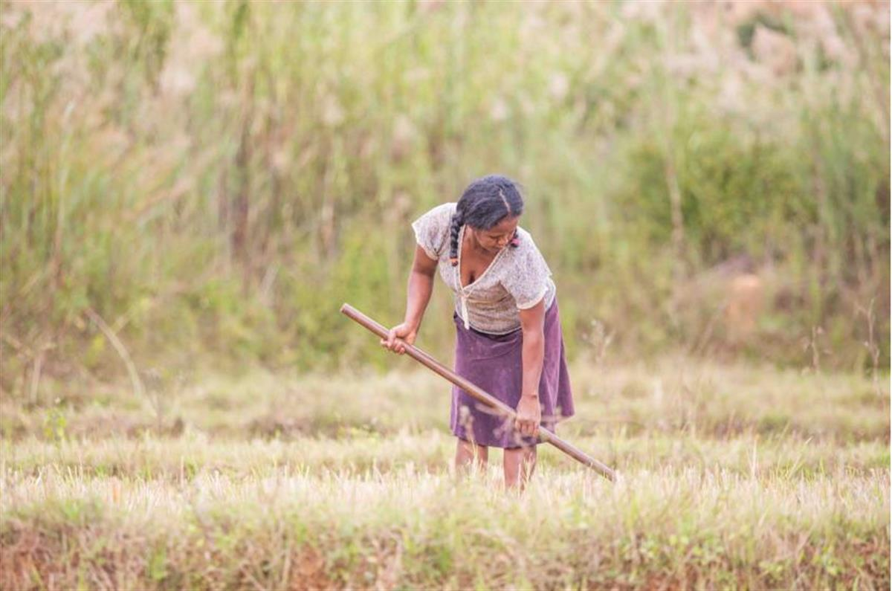
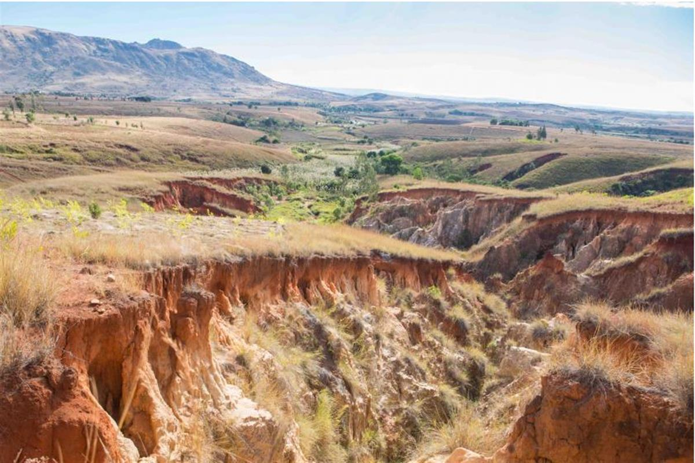
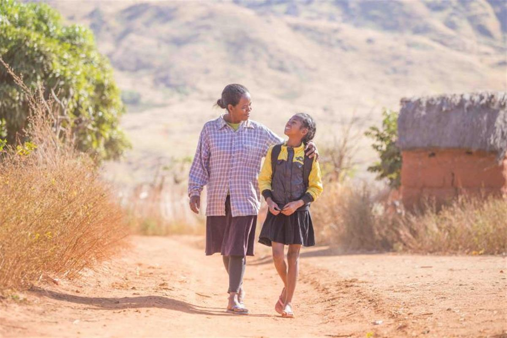

ON SOURCE: UNEP
Featured Archive Story: Birdsong returns to the hills of Bemolanga
The hills surrounding Ahbohibary Kofay used to be filled with birdsong, says Lydia, who tends a small rice paddy outside the tiny village at the bottom of Bemolanga valley. That was until this area in Western Madagascar was laid to waste by fire in the early 1990s. The fire killed the trees and the birds fell silent.
“There was a forest here before,” she says, indicating the corrugated slopes spreading to the horizon beyond her family’s fields. “Because of the bush fire, now it’s like this. Birds can’t live without trees.”
Without the trees holding the soil together, the land at the top of the valley started to erode. Every time it rained, streams carved deeper scars into the landscape—gullies known locally as lavaka—sending red soil down the valley and silting up the villagers’ fields. The local spring dried up and Lydia’s rice harvest fell by almost a third, forcing her family of six to put less on their plate, and giving them less to sell. Struggling to pay her children’s school fees, Lydia was forced to take her eldest son out of school.

Hillside erosion has taken a heavy toll on productivity in the Bongolava region, with 80 per cent of rice fields affected by siltation and sedimentation. Photo by UNEP / Lisa Murray
New growth to fight erosion
Lydia’s is a common story. In Madagascar’s Bongolava region, 80 per cent of rice fields are affected by siltation and sedimentation. Slash-and-burn agriculture has reduced forest cover to less than 6 per cent, with native grasses fast springing up in the trees’ place. Herders regularly burn the grass to encourage new growth to feed their cattle, perpetuating the degradation of the soil.
To address this problem, Sustainable Land Management Committees have been set up in seven communes, training Lydia and over 700 other community members on sustainable land management practices such as reforestation, digging erosion barriers and creating channels to prevent surface runoff, leading to the restoration of 30 ha of degraded land in Lydia’s village and 105 ha across the region so far.
“Before the project, people thought the forest would never return, but now the soil has changed and started to become like before,” Lydia says, indicating a nearby hillside bristling with young saplings and creased with barriers to prevent surface runoff.

Erosion gullies known as ‘lavaka’ carry red soil into Bemolanga valley, silting up the villagers’ fields. Photo by UNEP / Lisa Murray
Bemolanga bounces back
The optimism is palpable—and spreading. The spring has started to trickle again, the lavaka have stopped expanding, and Lydia’s paddy has stopped shrinking. Having seen the benefits of reforestation, landowners on neighbouring plots have even started planting their own saplings.
Having stabilized the hillsides, the next phase of the project will address soil degradation. By the end of the project, over 5,600 farmers will have the skills to deploy sustainable farming techniques such as crop rotation and composting—restoring yields lost to decades of damaging agricultural practices across 2,500 ha.
Based on past successes, Madagascar’s National Association of Environmental Actions estimates that crop yields will increase by approximately 40 per cent. Sitting in her paddy field, Lydia’s nostalgia for the forest is coloured with a growing sense of optimism. Her income is rebounding and she is looking forward to sending her son back to school.
On the surrounding slopes, the new growth echoes the change in the community’s fortunes. As Lydia says, looking around her with a smile: “Now there are trees, the birds have come back again, little by little.”

Hillside restoration has reduced siltation and local incomes are recovering, with the National Association of Environmental Actions aiming for a 40 per cent increase in local yields. Photo by UNEP / Lisa MurrayLand degradation costs Madagascar US$1.7 billion annually, almost a quarter of the country’s gross domestic product. Led by the UN Environment Programme, Participatory Sustainable Land Management in the Grassland Plateaus of Western Madagascar is aGlobal Environment Facility-funded initiative tackling land degradation and demonstrating how participatory sustainable land management can neutralize watershed degradation, restore ecosystem services, conserve biodiversity and improve agricultural productivity. The project aims to bring 8,500 ha in Bongolava under sustainable land management by 2021.
Participatory Sustainable Land Management in the Grassland Plateaus of Western Madagascar is just one of more than 80 projects the UN Environment Programme has implemented with the backing of the Global Environment Facility in support of the UN Convention to Combat Degradation and Desertification and other efforts to bring a halt to the threat of land degradation globally. Focusing on the theme “Investing in Land, Unlocking Opportunities”, the 14thConference of the Parties to the UN Convention to Combat Degradation and Desertification is taking place in Delhi, India from 2 to 14 September 2019.
For more information on Participatory Sustainable Land Management in the Grassland Plateaus of Western Madagascar and the UN Environment Programme’s work in Land Degradation, contact[email protected].
ON SOURCE: UNEP